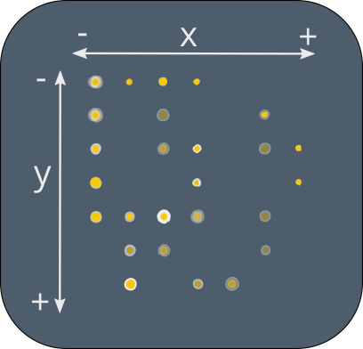

English
Druck Anonymisierung
1.
Als Erstes
generieren Sie bitte eine Druckmaske
für den entsprechenden Drucker.
2.
Laden Sie das Dokument (PDF) sowie die generierte Druckermaske (.json) und erzeugen Sie ein anonymisiertes Dokument. Dieses Dokument wird als "Dokumentname_masked.pdf" im selben Ordner wie das Dokument gespeichert. Zusätzlich werden die Einstellungen im selben Pfad als "calibration_masked.txt" gespeichert. Drucken Sie das anonymisierte Dokument randlos aus und fahren Sie mit Schritt 3 fort.
Dokument generieren
2.
Durch Scan-Artefakte ist es möglich, dass ein kleiner Versatz zwischen originalen und maskierten gelben Punkten entsteht. Um dies zu beheben, scannen Sie den anonymisierten Druck und kontrollieren Sie die gelben Punktmuster. Wenn ein Versatz festzustellen ist - variieren Sie x und y, um die Maskierungspunkte exakt mit den ursprünglichen gelben Punkten zu überlagern. Wiederholen Sie Schritt 2 mit x und y und klicken Sie erneut Dokument generiern. Der Punktradius beschreibt die Größe der zu druckenden Tracking Dots.
